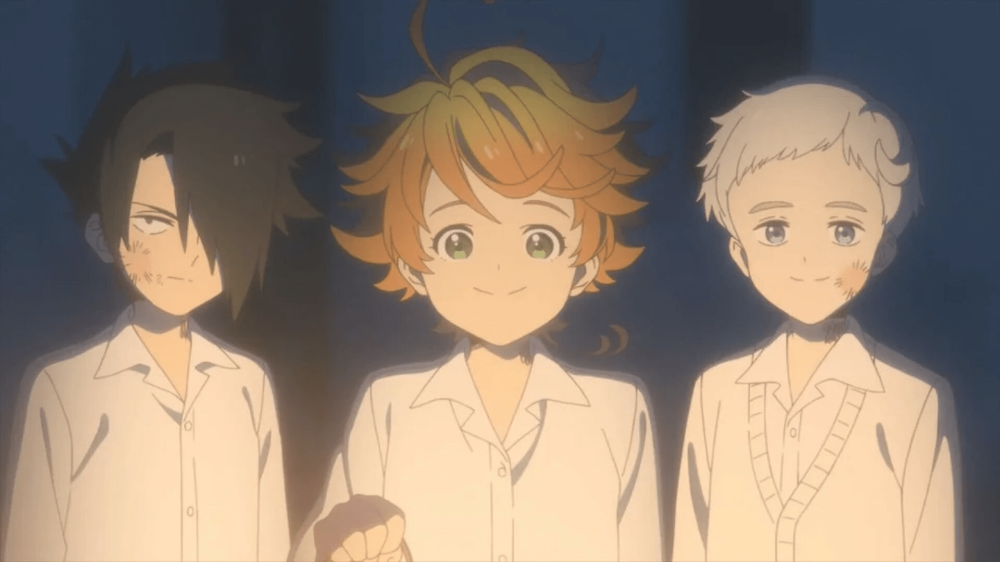
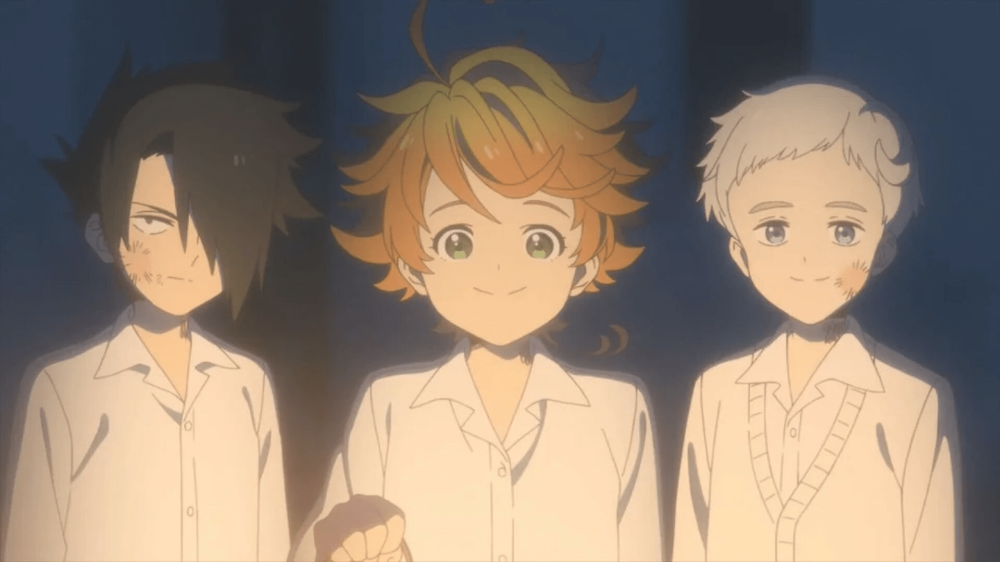

The Promised Neverland (Japanese: 約束のネバーランド, Hepburn: Yakusoku no Nebārando) is a Japanese manga series written by Kaiu Shirai and illustrated by Posuka Demizu. It was serialized in Shueisha's Weekly Shōnen Jump from August 2016 to June 2020, with its chapters collected in twenty tankōbon volumes. In North America, Viz Media licensed the manga for English release and serialized it on their digital Weekly Shonen Jump magazine. The series follows a group of orphaned children in their plan to escape from their orphanage, after learning of the dark truth behind their existence and the purpose of the orphanage.
 

| Emma | Ray | Norman |
|---|---|---|
| Female | Male | Male |
| 15 | 15 | 15 |